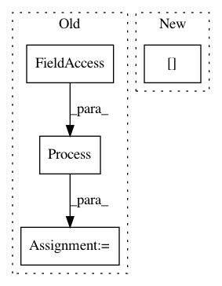

c9fa690f0d551f4290872e1a4fba69d25ea2f6a3,mne/realtime/tests/test_lsl_client.py,,test_lsl_client,#,44
Before Change
n_samples = 5
wait_max = 10
process = Process(target=_start_mock_lsl_stream, args=(host,))
process.daemon = True
process.start()
with LSLClient(info=None, host=host, wait_max=wait_max) as client:
After Change
raw = read_raw_fif(raw_fname)
raw_info = raw.info
sfreq = raw_info["sfreq"]
stream = MockLSLStream(host, raw, ch_type="eeg")
stream.start()
with LSLClient(info=raw_info, host=host, wait_max=wait_max) as client:
In pattern: SUPERPATTERN
Frequency: 3
Non-data size: 4
Instances
Project Name: mne-tools/mne-python
Commit Name: c9fa690f0d551f4290872e1a4fba69d25ea2f6a3
Time: 2019-04-23
Author: teon.brooks@gmail.com
File Name: mne/realtime/tests/test_lsl_client.py
Class Name:
Method Name: test_lsl_client
Project Name: vatlab/SoS
Commit Name: ac676981e6909c31167c3493275221e8ad34f48a
Time: 2017-03-02
Author: ben.bog@gmail.com
File Name: sos/sos_executor.py
Class Name: Base_Executor
Method Name: run
Project Name: tensorflow/benchmarks
Commit Name: 449e900ef018a775f2827dd3e591900c761004ab
Time: 2020-06-16
Author: 53017143+sganeshb@users.noreply.github.com
File Name: perfzero/lib/benchmark.py
Class Name: BenchmarkRunner
Method Name: run_benchmark